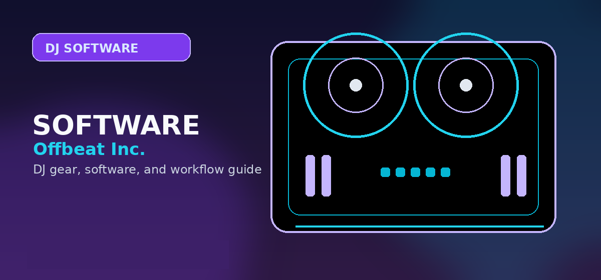

Controller-Software Compatibility Matrix
A practical compatibility matrix connecting DJ controllers, software ecosystems, streaming services, and buyer intent before readers purchase hardware.

Use compatibility as the gate before purchase
Controller articles should not send a reader to a checkout page until the software path is clear. A controller can be technically compatible with several apps but still be a poor match if the buyer needs hardware unlocks, streaming, stems, phone/tablet support, DVS, microphone inputs, or standalone operation.
| Controller/system | Primary software path | Secondary path | Best buyer | Buying caveat |
|---|---|---|---|---|
| DDJ-FLX2 | rekordbox / djay | Serato DJ Lite/Pro, Traktor Play | Casual beginner, phone/tablet/laptop starter | Limited I/O; not a serious gig controller. |
| DDJ-FLX4 | rekordbox | Serato | Best first serious beginner controller | Still a beginner controller, not a standalone replacement. |
| DDJ-GRV6 | rekordbox | Serato DJ Pro, djay | Creative 4-channel performer | Groove Circuit value is strongest in rekordbox. |
| RANE ONE / Performer path | Serato DJ Pro | Limited alternative mapping value | Scratch/open-format DJs | Overkill for casual beginners. |
| XDJ-AZ | rekordbox / standalone USB | Serato DJ Pro | Club-style premium standalone users | Expensive and physically large. |
| Denon Prime 4+ | Engine DJ standalone | Computer workflows depending setup | Feature-first standalone/mobile DJs | Less Pioneer/AlphaTheta booth continuity. |
| Traktor Kontrol S2/S4 | Traktor Pro | Not recommended as generic controller path | Traktor-focused electronic/looping DJs | Narrower ecosystem than Serato/rekordbox. |
Streaming compatibility notes
Streaming support is app-specific and service-specific. Apple Music, Spotify, Tidal, SoundCloud, Beatport, and Beatsource can all appear in DJ workflows, but recording, offline caching, stems, batch analysis, and hardware features may be limited. Treat streaming catalog access as a convenience, not as full library ownership for paid gigs.
Apple Music DJ Software
Where Apple Music works, which standalone units matter, and where features are restricted.
Open →StreamingDJ with Spotify
Spotify’s return, platform differences, and why offline/recording limitations matter.
Open →SoftwareBest DJ Software
The software parent page that is the best next step for broad software decisions.
Open →How to use the compatibility matrix
Use this matrix with the parent Controller Hub and the relevant software page so hardware and software choices stay matched. Pair each software decision with the strongest controller category for that ecosystem. This keeps hardware and software choices connected and reduces mismatched purchases.
How to keep compatibility decisions current
Compatibility changes when manufacturers release firmware, add streaming support, change license bundles, or update official software support. Compatibility pages become stale faster than evergreen buying guides, so the safest wording is “verify current support” rather than making permanent promises about every combination.
Each row should answer three questions. First: what is the primary software path the hardware was clearly designed around? Second: what secondary app support is official or practical? Third: what buyer intent does the combination serve? That prevents weak recommendations like buying a Serato-first scratch controller for a rekordbox club-prep learner or buying a tiny app controller for a paid-event mobile DJ.
Use this matrix before buying hardware or choosing software. It is not meant to rank products; it exists to stop mismatched purchases before they happen. That makes it useful for readers and protects affiliate trust.
Practical checklist before you decide
Use this page as one part of the decision, not the whole decision. Confirm the current price, software compatibility, operating-system support, and whether the option still fits the way you actually practice or perform.
- Fit: choose the option that matches your current workflow and the setup you expect to use for the next year.
- Compatibility: verify exact hardware, app, subscription, and file-format requirements before buying or switching.
- Reliability: avoid workflows that depend on one fragile adapter, one unstable app version, or an internet connection with no backup.
- Upgrade path: favor tools that can grow with you instead of forcing another purchase as soon as you start recording mixes or playing longer sets.
Official product and support pages
Use these official pages to confirm current specifications, software compatibility, and support details before buying.
Frequently Asked Questions
Why does compatibility matter before buying a controller?
A controller can be physically compatible but still fail the buyer’s real needs if software unlocks, streaming, outputs, stems, or mobile support do not match.
Can one controller work with several DJ apps?
Yes, but the best-supported app usually provides the cleanest labels, mappings, and feature access.
Should streaming support decide the controller purchase?
Only partly. Streaming support affects software choice first; controller choice should follow after the software path is selected.
What should I check before choosing DJ software?
Check controller compatibility, library tools, streaming support, stem features, recording limits, subscription cost, and whether the software matches the venues or hardware you expect to use.
Can I start with free DJ software?
Yes, but free versions often restrict hardware, recording, effects, or advanced library features. Use free software to learn basics, then upgrade when the limitations slow you down.